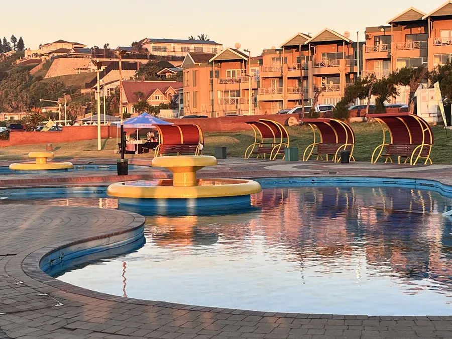

Coming to Durban for TinMan on 8 November? A runner, relay team and triathlete need different plans. Find your event first, then prepare for its own start and course.

Check the event on your entry receipt
The race entry page lists a 10km run, Mini Tri, Super Sprint, Sprint Tri, Sprint Duathlon and Challenge Tri, plus some relay options. Each has its own rules. A runner does not need the same gear as someone doing a swim, cycle and run.
We would start with the receipt rather than a poster. Find the exact category, then check your age rules, team details and the gear you must bring. For a relay, agree on who does each stage before travelling.
Use the final route, not an old distance chart
The organiser's Durban page and its linked entry page show different cycle lengths for some categories. The organiser also says each athlete must know their course and lap count. Do not guess which version applies.
Download the latest 2026 route instructions. Trace your own swim, cycle and run legs, plus any laps and handover points. If two documents conflict, ask the organiser which route is final for 8 November.
Read the Friday race email
Durban Tourism says paid entrants get final race details on the Friday before the event, which is 6 November. Start times are to be confirmed in that notice. A listing showing 07:00 does not mean every race begins then.
Check the email for your start, registration, course, transition access and last-minute changes. We think this one check matters more than a neat timetable made days in advance.
Registration and the trip from the Bluff
Race-day registration is listed from 05:45 to 07:00 on Sunday at Suncoast Sundeck. Suncoast is on Durban's Golden Mile. It is not on the Bluff. Check the route and live traffic before leaving 4Shore Guesthouse.
If you are bringing a bicycle, work out how to carry and unload it. If someone drops you off, agree on a legal point away from the closed course. Our Durban transport guide covers car and booked-ride choices.
Pack in the order you will race
For a triathlon, lay out your kit by stage: swim, cycle, run. Keep the race number and any timing item where the organiser tells you. Check helmet rules, transition access and what can be left at your space.
A duathlon begins on foot, while relay teams must plan their changes. Packing by stage helps you spot a missing item before the early start. Check the final race instructions for any kit rule we cannot confirm here.
Give supporters one place to meet
The organiser places the swim at Suncoast Beach and the transition by Suncoast Sundeck. A controlled cycling route uses road closures. Supporters should follow marshal directions and stay outside the course.
Pick a viewing area and a meeting point for after the finish. Trying to follow each leg by car may not work while roads are controlled. Our earlier Boxer Super Run guide covers a different running event; TinMan needs its own route plan.
FAQ: TinMan Durban 2026
When and where is TinMan Durban in November 2026?
Sunday 8 November at Suncoast on Durban's Golden Mile. Check the entry notice for your category and start time.
When is race-day registration?
The published window is 05:45–07:00 at Suncoast Sundeck. Check your final race instructions.
Why do TinMan cycling distances differ online?
The organiser and entry pages show different cycling lengths for some events. Follow the final 2026 course notice and ask the organiser if unsure.
Can I run without doing a triathlon?
Yes. The entry page also lists a 10km running event. Check the entry terms before paying.
Ask about a Bluff stay
Winston is the owner and host of 4Shore Guesthouse and the person guests can contact directly about rooms, rates, availability and practical questions. The guesthouse is at 28 Foreshore Drive, Ocean View, Bluff, Durban, KwaZulu-Natal, 4052. Call +27 83 254 4825 or email 4shoredurban@gmail.com.